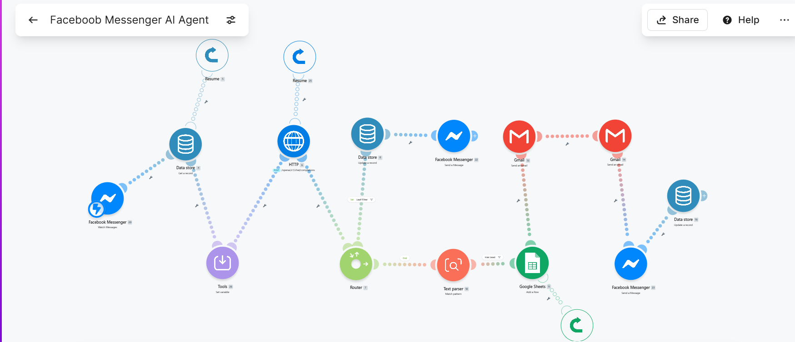

Project
A fully deployed conversational AI agent running on the Automate with Bon Facebook Page — answering Messenger messages 24/7, responding naturally as Bon, qualifying leads automatically, logging them to Google Sheets, and sending follow-up emails — all without any manual work. Built with Make.com, Groq AI, Meta Messenger API, Google Sheets, and Gmail.
A complete AI Lead Qualification Agent deployed on Facebook Messenger — where most people already are. Instead of waiting for someone to visit a website, this agent meets them on the platform they use every day and handles the entire qualification flow automatically.
The agent is trained on Bon's full background — his 7 years in the Philippine Coast Guard, his Top 1 of 55 ranking, his transition into VA and automation work, his projects, his personality, and his availability. It speaks as Bon, not as a generic assistant.
When someone messages the Automate with Bon Facebook page, the agent responds instantly — answering questions about services, background, and availability — and naturally collects name, project details, and email when hiring interest is detected. All lead data is automatically logged to Google Sheets and a follow-up notification is sent via Gmail. Zero manual work. 24/7.
This is the actual Make.com scenario running live. Every module visible here is active and deployed.

// live scenario — webhook → data store → set variable → HTTP (Groq AI) → router → text parser → Google Sheets → Gmail · error handlers on all critical paths
| # | Step | Tool | Status |
|---|---|---|---|
| 1 | User sends a message to the Automate with Bon Facebook Page | Facebook Messenger | ✓ Live |
| 2 | Meta Messenger API fires a webhook event to Make.com | Meta Messenger API | ✓ Live |
| 3 | Make.com Watch Messages module receives the message and sender ID | Make.com | ✓ Live |
| 3.5 | Conversation history retrieved from Data Store per user — injected into prompt for full context across messages | Make.com Data Store | ✓ Live |
| 4 | Input sanitization — user message and history normalized into clean variables before touching the AI prompt. Prevents JSON breaks from special characters, quotes, and unexpected formatting | Make.com Tools — Set Variable | ✓ Live |
| 5 | HTTP module sends sanitized message to Groq AI with full Bon profile as system prompt and clean conversation history | Groq AI (llama-3.3-70b) | ✓ Live |
| 6 | Make.com Send Message module replies to the user on Messenger automatically. Data Store updated with new exchange | Make.com + Meta API | ✓ Live |
| 7 | Router splits path — normal conversation continues, lead detection triggers separate pipeline | Make.com Router | ✓ Live |
| 8 | Lead detection — when hiring interest is shown, AI collects name, project, and email naturally one at a time. Each lead logged exactly once regardless of messages that follow | Groq AI + System Prompt | ✓ Live |
| 9 | Text parser extracts lead data via regex — name, email, project parsed from AI output and structured for logging | Make.com Text Parser | ✓ Live |
| 10 | Lead logged to Google Sheets with timestamp, name, email, project, and source. Duplicate logging prevented by router logic | Make.com + Google Sheets | ✓ Live |
| 11 | Automated Gmail notification sent to owner. Follow-up email sent to lead. Error handlers on all critical paths — scenario never breaks silently | Make.com + Gmail | ✓ Live |
This project didn't start as an AI lead agent. It started as a simple goal: give a Messenger chatbot memory. What it became — and how it got there — is the real story.
The goal was straightforward — connect a Messenger bot to Make.com's Data Store so it could remember what users said across messages. No lead gen. No email alerts. Just memory.
Once the memory layer worked, the next logical step was clear: if the bot remembers users, it can qualify them. Lead detection was added via system prompt tagging, then a router to catch qualified leads, then Google Sheets logging, then Gmail alerts. What started as one feature became an 11-step automated pipeline.
With the pipeline nearly complete, the Make.com free trial hit its operation limit. The scenario stopped running. Rather than abandon the build, a new Make.com account was created and the entire pipeline was rebuilt from scratch — routing logic, Data Store, webhook verification, OAuth scopes, and all.
After going live, a logic error surfaced — the pipeline was logging the same lead on every message after the initial capture, not just once. The system prompt tagging and router logic were corrected so each lead is logged exactly once, regardless of how many messages follow.
The agent passed Meta App Review and went fully public. It now runs 24/7 on the Automate with Bon Facebook Page — responding as Bon, qualifying leads, logging to Sheets, and sending Gmail alerts. Built twice, debugged live, shipped clean.
Message the Automate with Bon Facebook Page directly and the AI will respond automatically. Ask about services, background, availability, or anything else. No signup. No waiting. Just message.
// tip: try asking "what services do you offer?" or "I want to hire you"
→ Message Automate with Bon on Facebook